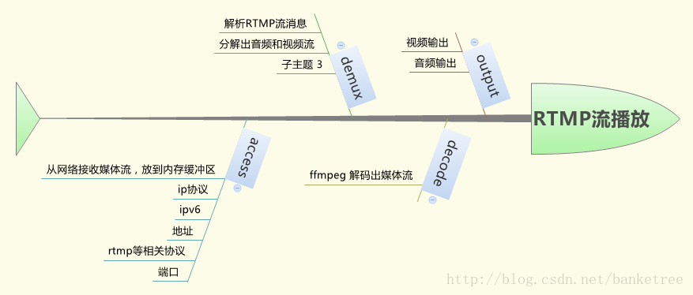

简介
Vlc for android是一款开源安卓播放器，具备播放多媒体文件、光盘、设备以及网络流媒体协议等功能，支持ARMv7 CPU或一个x86 CPU的设备，所有播放控制特性都已经开发完整。
下面将介绍如何获取代码、编译、vlc原理、缩小延迟、添加截图和录制视频、多路播放等。
详解
1、获取代码
官网源码下载：http://mirror.us.leaseweb.net/videolan/
git获取：clone from git://git.videolan.org/vlc-ports/android.git
补丁：https://patches.videolan.org/
2、编译
1、搭配环境
AndroidSDK：adt-bundle-linux-x86-20130522
JDK：jdk-7u25-linux-i586
NDK：android-ndk-r8e-linux-x86
2、安装工具
apt-get install gcc
apt-get install g++
apt-get build-dep vlc
apt-get install git
apt-get install wget
apt-get install autoconf
apt-get install libtool
apt-get install subversion
apt-get install cmake
apt-get install ant
3、配置信息
export ANDROID_NDK=/home/mythou/android-dev/android-ndk-r8e
export NDKR5C=/home/mythou/ndkr5c
export NDKR6B=/home/mythou/ndkr6b
PATH=$PATH:$NDKR6B:$ANDROID_NDK
export ANDROID_ABI=armeabi-v7a
export JAVA_HOME=/home/mythou/android-dev/jdk/jdk1.7.0_25
export JRE_HOME=/home/mythou/android-dev/jdk/jdk1.7.0_25/jre
export CLASSPATH=.:$CLASSPATH:$JAVA_HOME/lib:$JAVA_HOME/jre/lib
export ANT_HOME=/home/mythou/android-dev/apache-ant-1.8.0
export PATH=$JAVA_HOME/bin:$JAVA_HOME/jre/bin:$PATH:$HOME/bin:$ANT_HOME
export ANDROID_SDK=/home/mythou/android-dev/adt-bundle-linux-x86-20130522/sdk
PATH=$PATH:$ANDROID_SDK/tools:$ANDROID_SDK/platform-tools
4、编译
sh compile.sh or sh compile.sh release
5、辅助库
由于某些原因，有些库无法获得，请手动下载放入便可。
3、vlc播放原理
视频播放的基本步骤：
1、acess 访问（获取视频数据）
2、demux 解复用（音频、视频分离）
3、decode 解码（音频和视频的解码）
4、output 输出（音频和视频的输出（aout和vout）
如图：

4、缩小延迟
修改延迟的方法有两种：1、直接用Java代码实现；2、在vlc库中修改。
涉及延迟的参数有：file-caching（文件缓存）、live-caching（直播缓存）、network-caching（网络缓存）、sout-mux-caching（输出缓存）。
Java代码实现如下：
options.add(":file-caching=1500");//文件缓存
options.add(":network-caching=1500");//网络缓存
options.add(":live-caching=1500");//直播缓存
options.add(":sout-mux-caching=1500");//输出缓存
options.add(":codec=mediacodec,iomx,all");vlc库实现如下：
查找目标文件vlc/src/libvlc-module.c 修改对应的参数
add_integer( "file-caching", DEFAULT_PTS_DELAY / 3000,
CACHING_TEXT, CACHING_LONGTEXT, true )
add_integer( "live-caching", DEFAULT_PTS_DELAY / 3000,
CAPTURE_CACHING_TEXT, CAPTURE_CACHING_LONGTEXT, true )
add_integer( "network-caching", CLOCK_FREQ / 3000,
NETWORK_CACHING_TEXT, NETWORK_CACHING_LONGTEXT, true )
add_integer( "sout-mux-caching", 1000, SOUT_MUX_CACHING_TEXT,
SOUT_MUX_CACHING_LONGTEXT, true ) 把分母数据增大，缓存的数据就越小，延迟就减少，流畅性就减少，相反，分母数据减少，缓存的数据就越大，延迟就增加，流畅性就增加。
测试结果，延迟明显减少。
5、添加截图和录制视频
官方已给出补丁实现截图和录制视频
1、截图
修改文件： android/configure.sh 搜索内容 -disable-sout 并删除
修改文件：android/vlc/contrib/src/ffmpeg/rules.mak 增加-enable-encoder=png的编码器 实现png格式截图
FFMPEGCONF += --disable-encoders --disable-muxers
改成FFMPEGCONF += --disable-encoders --enable-encoder=png --disable-muxers
源码重新编译便可
编译过程中可能会出现如下问题：
./vlc/android/modules/.libs/libvorbis_plugin.a(libvorbis_plugin_la-vorbis.o): in function OpenEncoder:../../modules/codec/vorbis.c:758: error: undefined reference to 'vorbis_encode_setup_vbr‘
解决方法：
修改文件
vlc-android/jni/Android.mk
LOCAL_LDLIBS := -L$(VLC_CONTRIB)/lib \
$(VLC_MODULES) \
$(VLC_BUILD_DIR)/lib/.libs/libvlc.a \
$(VLC_BUILD_DIR)/src/.libs/libvlccore.a \
$(VLC_BUILD_DIR)/compat/.libs/libcompat.a \
-ldl -lz -lm -llog \
-ldvbpsi -lebml -lmatroska -ltag \
-logg -lFLAC -ltheora -lvorbis -lvorbisfile -lvorbisenc \
-lmpeg2 -la52 \
-lavformat -lavcodec -lswscale -lavutil -lpostproc -lgsm -lopenjpeg \
-lliveMedia -lUsageEnvironment -lBasicUsageEnvironment -lgroupsock \
-lspeex -lspeexdsp \
-lxml2 -lpng -lgnutls -lgcrypt -lgpg-error \
-lnettle -lhogweed -lgmp \
-lfreetype -liconv -lass -lfribidi -lopus \
-lEGL -lGLESv2 -ljpeg \
$(CPP_STATIC)
在
-logg -lFLAC -ltheora -lvorbis
后添加
-lvorbisfile -lvorbisenc error: undefined reference to 'vlc_entry__access_output_udp'
解决方法：
修改文件：
/vlc/modules/access_output/Modules.am
SOURCES_access_output_dummy = dummy.c
SOURCES_access_output_file = file.c
SOURCES_access_output_udp = udp.c
SOURCES_access_output_http = http.c bonjour.c bonjour.h
SOURCES_access_output_shout = shout.c
access_output_LTLIBRARIES += \
libaccess_output_dummy_plugin.la \
libaccess_output_file_plugin.la \
libaccess_output_udp_plugin.la \
libaccess_output_http_plugin.la
#libaccess_output_udp_plugin_la_SOURCES = udp.c
#libaccess_output_udp_plugin_la_LIBADD = $(SOCKET_LIBS) $(LIBPTHREAD)
#access_output_LTLIBRARIES += libaccess_output_udp_plugin.la
libaccess_output_livehttp_plugin_la_SOURCES = livehttp.c
libaccess_output_livehttp_plugin_la_CFLAGS = $(AM_CFLAGS) $(GCRYPT_CFLAGS)
libaccess_output_livehttp_plugin_la_LIBADD = $(GCRYPT_LIBS) -lgpg-error
if HAVE_GCRYPT
access_output_LTLIBRARIES += libaccess_output_livehttp_plugin.la
endif
内容覆盖便可
相关源码添加：
在libvlcjni.c中增加函数：
boolean Java_org_videolan_libvlc_LibVLC_takeSnapShot(JNIEnv *env, jobject thiz,jint number, jstring path, jint width,jint height)
{
jboolean isCopy;
libvlc_media_player_t *mp = getMediaPlayer(env, thiz);
/* Get C string */
const char* psz_path = (*env)->GetStringUTFChars(env, path, &isCopy);
if (mp)
if(libvlc_video_take_snapshot(mp, (int)number,psz_path , (int)width,(int)height)==0)
return JNI_TRUE;
return JNI_FALSE;
} LibVlc.java中增加native函数的接口和调用方法：
private native boolean takeSnapShot( int num, String file, int width, int height);
public boolean takeSnapShot(String file, int width, int height) {
return takeSnapShot(0, file, width, height);
} 2、录制视频
录制补丁 https://patches.videolan.org/patch/606/
补丁内容如下：
diff --git a/include/vlc/libvlc_events.h b/include/vlc/libvlc_events.h
index 2cfedbf..25a16ea 100644
--- a/include/vlc/libvlc_events.h
+++ b/include/vlc/libvlc_events.h
@@ -72,6 +72,8 @@ enum libvlc_event_e {
libvlc_MediaPlayerSnapshotTaken,
libvlc_MediaPlayerLengthChanged,
libvlc_MediaPlayerVout,
+ libvlc_MediaPlayerRecordableChanged,
+ libvlc_MediaPlayerRecordingFinished,
libvlc_MediaListItemAdded=0x200,
libvlc_MediaListWillAddItem,
@@ -165,6 +167,14 @@ typedef struct libvlc_event_t
} media_player_pausable_changed;
struct
{
+ int new_recordable;
+ } media_player_recordable_changed;
+ struct
+ {
+ char *psz_filename;
+ } media_player_recording_finished;
+ struct
+ {
int new_count;
} media_player_vout;
diff --git a/include/vlc/libvlc_media_player.h b/include/vlc/libvlc_media_player.h
index aefef02..8ddef37 100644
--- a/include/vlc/libvlc_media_player.h
+++ b/include/vlc/libvlc_media_player.h
@@ -1628,6 +1628,121 @@ LIBVLC_API int libvlc_audio_set_delay( libvlc_media_player_t *p_mi, int64_t i_de
/** @} audio */
+/**
+ * Can the media player record the current media?
+ *
+ * Media must be buffering or playing before it can be recorded.
+ *
+ * The media player event manager will emit a libvlc_MediaPlayerRecordableChanged event
+ * when the recordable state changes after starting media playback. The event data will
+ * describe the new recordable state, so invocation of this API method is not strictly
+ * necessary to determine when recording can be started.
+ *
+ * A libvlc_MediaPlayerRecordableChanged event will not be emitted if the media is
+ * stopped (notified by a libvlc_MediaPlayerStoppedEvent) or finishes normally (notified
+ * by a libvlc_MediaPlayerFinished event).
+ *
+ * A calling application should therefore register an event callback for those events
+ * so that it may query the new recordable state and manage recording at the appropriate
+ * time.
+ *
+ * \param p_mi media player
+ * \return true if the media player can record, false if it can not
+ * \version LibVLC 2.1.0 or later
+ */
+LIBVLC_API bool libvlc_media_player_is_recordable( libvlc_media_player_t *p_mi );
+
+/**
+ * Is the current media being recorded?
+ *
+ * \param p_mi media player
+ * \return true if recording, false if not
+ * \version LibVLC 2.1.0 or later
+ */
+LIBVLC_API bool libvlc_media_player_is_recording( libvlc_media_player_t *p_mi );
+
+/**
+ * Start recording the current media.
+ *
+ * Media must be buffering or playing before it can be recorded. A calling application
+ * can begin recording immediately on receipt of a libvlc_MediaPlayerRecordableChanged
+ * event sent via the media player event manager (if recording is possible for the
+ * currently playing media), and any time thereafter until the media stops.
+ *
+ * Media will be saved to the file path denoted by the psz_filename parameter if it is
+ * supplied. Any such supplied filename should not include a file extension as the
+ * correct file extension will automatically be appended when the file is created. This
+ * filename may denote a full path name, but each directory in the path must already
+ * exist or recording will silently fail. If the calling application chooses to specify
+ * the filename then it is the responsibility of that application to take account of
+ * this and itself make sure any needed directories are created.
+ *
+ * Alternatively, a calling application need not supply a filename and so instead let
+ * vlc automatically generate a unique filename. This will cause vlc to create a new
+ * file in the appropriate media directory for the user - for example "~/Videos". The
+ * actual filename used will be sent in an event when the recording is complete.
+ *
+ * When recording has finished and the new file has been completely saved, a
+ * libvlc_MediaPlayerRecordingFinished event will be sent via the media player event
+ * manager. The event data will contain the filename of the newly recorded file - this
+ * will either be the filename as specified by the calling application or a filename
+ * generated by vlc if the application did not supply a filename. In either case, this
+ * filename will include the automatically appended file extension.
+ *
+ * The saved media file will not be immediately available or visible until recording
+ * has completely finished and the libvlc_MediaPlayerRecordingFinished event has been
+ * received, or the media has stopped or finished normally.
+ *
+ * Recording can be stopped and started on-the-fly once the recordable state is set;
+ * each time recording is stopped and restarted a new file will be created so a calling
+ * application should take care to provide unique filenames, or defer to vlc to create
+ * unique filenames.
+ *
+ * Recording will be stopped when the media stops playing, and must be explicitly
+ * started again to restart recording, i.e. the recording state is not automatically
+ * preserved when playing media subsequently.
+ *
+ * Media player functionailty such as next/previous chapter, set time or position and
+ * so on are ineffective when recording is enabled. However, pausing the media is
+ * possible and will pause the recording; unpausing the media will resume playback and
+ * recording.
+ *
+ * Recording of the primary media or sub-items is possible.
+ *
+ * \param p_mi media player
+ * \param psz_filename name of the file to save the media to, not including any file extension,
+ * or NULL if vlc should generate the filename automatically
+ * \return 0 if recording was started, -1 on error
+ * \version LibVLC 2.1.0 or later
+ */
+LIBVLC_API int libvlc_media_player_record_start( libvlc_media_player_t *p_mi, const char *psz_filename );
+
+/**
+ * Stop recording the current media.
+ *
+ * This method requests that the recording stop, and will return immediately. Recording
+ * will not stop immediately.
+ *
+ * When the recording actually stops some short time later and the new file has
+ * finished being written, a libvlc_MediaPlayerRecordingFinished event will be sent via
+ * the media player event manager. The newly recorded file will not be visible or
+ * available until after this event has been sent.
+ *
+ * The event data will contain the full name of the file that was created. The filename
+ * will either be that as was specified by the calling application on invoking
+ * libvlc_media_player_record_start(), or the filename that vlc automatically generated
+ * if the calling application did not supply its own filename. In either case the
+ * filename will contain the automatically appended file extension.
+ *
+ * There is no need to invoke this method to stop the recording if the media is stopped
+ * or finishes playing normally.
+ *
+ * \param p_mi media player
+ * \return 0 if recording was stopped, -1 on error
+ * \version LibVLC 2.1.0 or later
+ */
+LIBVLC_API int libvlc_media_player_record_stop( libvlc_media_player_t *p_mi );
+
/** @} media_player */
# ifdef __cplusplus
diff --git a/lib/event.c b/lib/event.c
index c71a48a..7ef4abd 100644
--- a/lib/event.c
+++ b/lib/event.c
@@ -279,6 +279,8 @@ static const event_name_t event_list[] = {
DEF(MediaPlayerSnapshotTaken)
DEF(MediaPlayerLengthChanged)
DEF(MediaPlayerVout)
+ DEF(MediaPlayerRecordableChanged)
+ DEF(MediaPlayerRecordingFinished)
DEF(MediaListItemAdded)
DEF(MediaListWillAddItem)
diff --git a/lib/libvlc.sym b/lib/libvlc.sym
index 42dad5c..3ff67ef 100644
--- a/lib/libvlc.sym
+++ b/lib/libvlc.sym
@@ -137,6 +137,8 @@ libvlc_media_player_get_title
libvlc_media_player_get_title_count
libvlc_media_player_get_xwindow
libvlc_media_player_has_vout
+libvlc_media_player_is_recordable
+libvlc_media_player_is_recording
libvlc_media_player_is_seekable
libvlc_media_player_is_playing
libvlc_media_player_new
@@ -146,6 +148,8 @@ libvlc_media_player_set_pause
libvlc_media_player_pause
libvlc_media_player_play
libvlc_media_player_previous_chapter
+libvlc_media_player_record_start
+libvlc_media_player_record_stop
libvlc_media_player_release
libvlc_media_player_retain
libvlc_media_player_set_agl
diff --git a/lib/media_player.c b/lib/media_player.c
index a41b8c7..6573197 100644
--- a/lib/media_player.c
+++ b/lib/media_player.c
@@ -64,6 +64,10 @@ input_pausable_changed( vlc_object_t * p_this, char const * psz_cmd,
vlc_value_t oldval, vlc_value_t newval,
void * p_userdata );
static int
+input_recordable_changed( vlc_object_t *p_this, char const *psz_cmd,
+ vlc_value_t oldval, vlc_value_t newval,
+ void *p_userdata );
+static int
input_event_changed( vlc_object_t * p_this, char const * psz_cmd,
vlc_value_t oldval, vlc_value_t newval,
void * p_userdata );
@@ -72,6 +76,10 @@ static int
snapshot_was_taken( vlc_object_t *p_this, char const *psz_cmd,
vlc_value_t oldval, vlc_value_t newval, void *p_data );
+static int
+file_recording_finished( vlc_object_t *p_this, char const *psz_cmd,
+ vlc_value_t oldval, vlc_value_t newval, void *p_data );
+
static void libvlc_media_player_destroy( libvlc_media_player_t *p_mi );
/*
@@ -132,6 +140,8 @@ static void release_input_thread( libvlc_media_player_t *p_mi, bool b_input_abor
input_seekable_changed, p_mi );
var_DelCallback( p_input_thread, "can-pause",
input_pausable_changed, p_mi );
+ var_DelCallback( p_input_thread, "can-record",
+ input_recordable_changed, p_mi );
var_DelCallback( p_input_thread, "intf-event",
input_event_changed, p_mi );
@@ -227,6 +237,25 @@ input_pausable_changed( vlc_object_t * p_this, char const * psz_cmd,
}
static int
+input_recordable_changed( vlc_object_t *p_this, char const *psz_cmd,
+ vlc_value_t oldval, vlc_value_t newval,
+ void *p_userdata )
+{
+ VLC_UNUSED(p_this);
+ VLC_UNUSED(psz_cmd);
+ VLC_UNUSED(oldval);
+
+ libvlc_media_player_t *p_mi = p_userdata;
+ libvlc_event_t event;
+
+ event.type = libvlc_MediaPlayerRecordableChanged;
+ event.u.media_player_recordable_changed.new_recordable = newval.b_bool;
+
+ libvlc_event_send( p_mi->p_event_manager, &event );
+ return VLC_SUCCESS;
+}
+
+static int
input_event_changed( vlc_object_t * p_this, char const * psz_cmd,
vlc_value_t oldval, vlc_value_t newval,
void * p_userdata )
@@ -357,6 +386,23 @@ static int snapshot_was_taken(vlc_object_t *p_this, char const *psz_cmd,
return VLC_SUCCESS;
}
+static int file_recording_finished(vlc_object_t *p_this, char const *psz_cmd,
+ vlc_value_t oldval, vlc_value_t newval, void *p_data )
+{
+ VLC_UNUSED(p_this);
+ VLC_UNUSED(psz_cmd);
+ VLC_UNUSED(oldval);
+
+ libvlc_media_player_t *p_mi = p_data;
+ libvlc_event_t event;
+
+ event.type = libvlc_MediaPlayerRecordingFinished;
+ event.u.media_player_recording_finished.psz_filename = newval.psz_string;
+
+ libvlc_event_send(p_mi->p_event_manager, &event);
+ return VLC_SUCCESS;
+}
+
static input_thread_t *find_input (vlc_object_t *obj)
{
libvlc_media_player_t *mp = (libvlc_media_player_t *)obj;
@@ -480,6 +526,10 @@ libvlc_media_player_new( libvlc_instance_t *instance )
var_Create (mp, "amem-set-volume", VLC_VAR_ADDRESS);
var_Create (mp, "amem-format", VLC_VAR_STRING | VLC_VAR_DOINHERIT);
var_Create (mp, "amem-rate", VLC_VAR_INTEGER | VLC_VAR_DOINHERIT);
+
+ var_Create (mp, "recording-finished", VLC_VAR_STRING);
+ var_AddCallback (mp, "recording-finished", file_recording_finished, mp);
+
var_Create (mp, "amem-channels", VLC_VAR_INTEGER | VLC_VAR_DOINHERIT);
mp->p_md = NULL;
@@ -515,6 +565,9 @@ libvlc_media_player_new( libvlc_instance_t *instance )
register_event(mp, TitleChanged);
register_event(mp, PausableChanged);
+ register_event(mp, RecordableChanged);
+ register_event(mp, RecordingFinished);
+
register_event(mp, Vout);
/* Snapshot initialization */
@@ -566,6 +619,8 @@ static void libvlc_media_player_destroy( libvlc_media_player_t *p_mi )
var_DelCallback( p_mi->p_libvlc,
"snapshot-file", snapshot_was_taken, p_mi );
+ var_DelCallback( p_mi, "recording-finished", file_recording_finished, p_mi );
+
/* No need for lock_input() because no other threads knows us anymore */
if( p_mi->input.p_thread )
release_input_thread(p_mi, true);
@@ -732,12 +787,14 @@ int libvlc_media_player_play( libvlc_media_player_t *p_mi )
var_AddCallback( p_input_thread, "can-seek", input_seekable_changed, p_mi );
var_AddCallback( p_input_thread, "can-pause", input_pausable_changed, p_mi );
+ var_AddCallback( p_input_thread, "can-record", input_recordable_changed, p_mi );
var_AddCallback( p_input_thread, "intf-event", input_event_changed, p_mi );
if( input_Start( p_input_thread ) )
{
unlock_input(p_mi);
var_DelCallback( p_input_thread, "intf-event", input_event_changed, p_mi );
+ var_DelCallback( p_input_thread, "can-record", input_recordable_changed, p_mi );
var_DelCallback( p_input_thread, "can-pause", input_pausable_changed, p_mi );
var_DelCallback( p_input_thread, "can-seek", input_seekable_changed, p_mi );
vlc_object_release( p_input_thread );
@@ -1409,3 +1466,62 @@ void libvlc_media_player_next_frame( libvlc_media_player_t *p_mi )
vlc_object_release( p_input_thread );
}
}
+
+bool libvlc_media_player_is_recordable( libvlc_media_player_t *p_mi )
+{
+ input_thread_t *p_input_thread;
+ bool b_can_record;
+
+ p_input_thread = libvlc_get_input_thread( p_mi );
+ if( !p_input_thread )
+ return false;
+
+ b_can_record = var_GetBool( p_input_thread, "can-record" );
+
+ vlc_object_release( p_input_thread );
+ return b_can_record;
+}
+
+bool libvlc_media_player_is_recording( libvlc_media_player_t *p_mi )
+{
+ input_thread_t *p_input_thread;
+ bool b_record;
+
+ p_input_thread = libvlc_get_input_thread( p_mi );
+ if( !p_input_thread )
+ return false;
+
+ b_record = var_GetBool( p_input_thread, "record" );
+
+ vlc_object_release( p_input_thread );
+ return b_record;
+}
+
+int libvlc_media_player_record_start( libvlc_media_player_t *p_mi, const char* psz_filename )
+{
+ input_thread_t *p_input_thread;
+
+ p_input_thread = libvlc_get_input_thread( p_mi );
+ if( !p_input_thread )
+ return -1;
+
+ var_SetString( p_input_thread, "input-record-path", psz_filename );
+ var_SetBool( p_input_thread, "record", true );
+
+ vlc_object_release( p_input_thread );
+ return 0;
+}
+
+int libvlc_media_player_record_stop( libvlc_media_player_t *p_mi )
+{
+ input_thread_t *p_input_thread;
+
+ p_input_thread = libvlc_get_input_thread( p_mi );
+ if( !p_input_thread )
+ return -1;
+
+ var_SetBool( p_input_thread, "record", false );
+
+ vlc_object_release( p_input_thread );
+ return 0;
+}
diff --git a/modules/stream_out/record.c b/modules/stream_out/record.c
index de6d32e..40ddfea 100644
--- a/modules/stream_out/record.c
+++ b/modules/stream_out/record.c
@@ -110,6 +110,8 @@ struct sout_stream_sys_t
int i_id;
sout_stream_id_t **id;
mtime_t i_dts_start;
+
+ char *psz_record_file;
};
static void OutputStart( sout_stream_t *p_stream );
@@ -158,6 +160,8 @@ static int Open( vlc_object_t *p_this )
p_sys->i_dts_start = 0;
TAB_INIT( p_sys->i_id, p_sys->id );
+ p_sys->psz_record_file = NULL;
+
return VLC_SUCCESS;
}
@@ -172,6 +176,19 @@ static void Close( vlc_object_t * p_this )
if( p_sys->p_out )
sout_StreamChainDelete( p_sys->p_out, p_sys->p_out );
+ if( p_sys->psz_record_file ) {
+ for( vlc_object_t *p_mp = p_stream->p_parent; p_mp; p_mp = p_mp->p_parent )
+ {
+ if( var_Type( p_mp, "recording-finished" ) )
+ {
+ var_SetString( p_mp, "recording-finished", p_sys->psz_record_file );
+ break;
+ }
+ }
+
+ free( p_sys->psz_record_file );
+ }
+
TAB_CLEAN( p_sys->i_id, p_sys->id );
free( p_sys->psz_prefix );
free( p_sys );
@@ -352,7 +369,10 @@ static int OutputNew( sout_stream_t *p_stream,
}
if( psz_file && psz_extension )
+ {
+ p_sys->psz_record_file = strdup( psz_file );
var_SetString( p_stream->p_libvlc, "record-file", psz_file );
+ }
free( psz_file );
free( psz_output );
diff --git a/src/input/var.c b/src/input/var.c
index 9613fe2..04f33b9 100644
--- a/src/input/var.c
+++ b/src/input/var.c
@@ -210,6 +210,9 @@ void input_ControlVarInit ( input_thread_t *p_input )
text.psz_string = _("Subtitles Track");
var_Change( p_input, "spu-es", VLC_VAR_SETTEXT, &text, NULL );
+ /* ES Out */
+ var_Create( p_input, "input-record-path", VLC_VAR_STRING | VLC_VAR_DOINHERIT );
+
/* Special read only objects variables for intf */
var_Create( p_input, "bookmarks", VLC_VAR_STRING | VLC_VAR_DOINHERIT );
下载补丁，并把文件放到vlc目录中，执行命令patch -p1 < xxxx.patch，由于版本不一样有些地方会失败，请打开补丁自己检查手动修改。
补丁中主要相关函数：
+bool libvlc_media_player_is_recordable( libvlc_media_player_t *p_mi )
+{
+ input_thread_t *p_input_thread;
+ bool b_can_record;
+
+ p_input_thread = libvlc_get_input_thread( p_mi );
+ if( !p_input_thread )
+ return false;
+
+ b_can_record = var_GetBool( p_input_thread, "can-record" );
+
+ vlc_object_release( p_input_thread );
+ return b_can_record;
+}
+
+bool libvlc_media_player_is_recording( libvlc_media_player_t *p_mi )
+{
+ input_thread_t *p_input_thread;
+ bool b_record;
+
+ p_input_thread = libvlc_get_input_thread( p_mi );
+ if( !p_input_thread )
+ return false;
+
+ b_record = var_GetBool( p_input_thread, "record" );
+
+ vlc_object_release( p_input_thread );
+ return b_record;
+}
+
+int libvlc_media_player_record_start( libvlc_media_player_t *p_mi, const char* psz_filename )
+{
+ input_thread_t *p_input_thread;
+
+ p_input_thread = libvlc_get_input_thread( p_mi );
+ if( !p_input_thread )
+ return -1;
+
+ var_SetString( p_input_thread, "input-record-path", psz_filename );
+ var_SetBool( p_input_thread, "record", true );
+
+ vlc_object_release( p_input_thread );
+ return 0;
+}
+
+int libvlc_media_player_record_stop( libvlc_media_player_t *p_mi )
+{
+ input_thread_t *p_input_thread;
+
+ p_input_thread = libvlc_get_input_thread( p_mi );
+ if( !p_input_thread )
+ return -1;
+
+ var_SetBool( p_input_thread, "record", false );
+
+ vlc_object_release( p_input_thread );
+ return 0;
+}库调用方法函数如下：
jboolean Java_org_videolan_libvlc_LibVLC_takeSnapShot(JNIEnv *env, jobject thiz,jint number, jstring path, jint width,jint height)
{
jboolean isCopy;
libvlc_media_player_t *mp = getMediaPlayer(env, thiz);
/* Get C string */
const char* psz_path = (*env)->GetStringUTFChars(env, path, &isCopy);
if (mp)
if(libvlc_video_take_snapshot(mp, (int)number,psz_path , (int)width,(int)height)==0)
return JNI_TRUE;
return JNI_FALSE;
}
jboolean Java_org_videolan_libvlc_LibVLC_videoRecordStart(JNIEnv *env, jobject thiz,jstring path)
{
jboolean isCopy;
libvlc_media_player_t *mp = getMediaPlayer(env, thiz);
/* Get C string */
const char* psz_path = (*env)->GetStringUTFChars(env, path, &isCopy);
//const char* psz_filename=(*env)->GetStringUTFChars(env, filename, &isCopy);
if (mp)
if(libvlc_media_player_record_start(mp,psz_path)==0)
return JNI_TRUE;
return JNI_FALSE;
}
jboolean Java_org_videolan_libvlc_LibVLC_videoRecordStop(JNIEnv *env, jobject thiz)
{
jboolean isCopy;
libvlc_media_player_t *mp = getMediaPlayer(env, thiz);
/* Get C string */
if (mp)
if(libvlc_media_player_record_stop(mp)==0)
return JNI_TRUE;
return JNI_FALSE;
}
jboolean Java_org_videolan_libvlc_LibVLC_videoIsRecording(JNIEnv *env, jobject thiz)
{
jboolean isCopy;
libvlc_media_player_t *mp = getMediaPlayer(env, thiz);
if (mp)
if(libvlc_media_player_is_recording(mp))
return JNI_TRUE;
return JNI_FALSE;
}
jboolean Java_org_videolan_libvlc_LibVLC_videoIsRecordable(JNIEnv *env, jobject thiz)
{
jboolean isCopy;
libvlc_media_player_t *mp = getMediaPlayer(env, thiz);
if (mp)
if(libvlc_media_player_is_recordable(mp))
return JNI_TRUE;
return JNI_FALSE;
}
jint Java_org_videolan_libvlc_LibVLC_getState(JNIEnv *env, jobject thiz)
{
libvlc_media_player_t *mp = getMediaPlayer(env, thiz);
if (mp){
libvlc_state_t state=libvlc_media_player_get_state(mp);
return (jint)state;
}
else
return -1;
}6、实现多路播放
使用process属性实现
总结
接触vlc for android 是帮助朋友完成一个外单，即实现认证播放器的封装（即添加播放网络视频的认证），传地址便可播放。
经测试vlc无法播放swf文件，为了弥补这已缺陷，准备添加swfdec到android平台以支持swf文件。
推荐博客网站：http://flavienlaurent.com/
ndk_r11 (March 2016)
Windows 32-bit : http://dl.google.com/android/repository/android-ndk-r11-windows-x86.zipWindows 64-bit : http://dl.google.com/android/repository/android-ndk-r11-windows-x86_64.zipMac OS X 64-bit : http://dl.google.com/android/repository/android-ndk-r11-darwin-x86_64.zipLinux 64-bit (x86) : http://dl.google.com/android/repository/android-ndk-r11-linux-x86_64.zipndk_r10e (Jan 2015)
ndk_r10d (December 2014)
ndk_r10c(October 2014)
ndk_r10b(September 2014)
ndk_r10(July 2014)
ndk_r9d(March 2014)
ndk_r9c(December 2013)
ndk_r9b (October 2013)
ndk_r9 (July 2013)
ndk_r8e (March 2013)
Note :
NDK r8e is the first NDK with 32bit and 64bit releases. The prior ones were all 32bit and didn't have any suffix, so r8b would be:
ndk_r8d (December 2012)
ndk_r8C (November 2012)
ndk_r8b (July 2012)
ndk_r8 (May 2012)
ndk_r7c (April 2012)
ndk_r7b (February 2012)
ndk_r7 (November 2011)
ndk_r6b (August 2011)
ndk_r6 (July 2011)
ndk_r5c (June 2011)
ndk_r5b (January 2011)
ndk_r5 (December 2010)
ndk_r4b (June 2010)
ndk_r4 (may 2010)
ndk_r3 (March 2010)